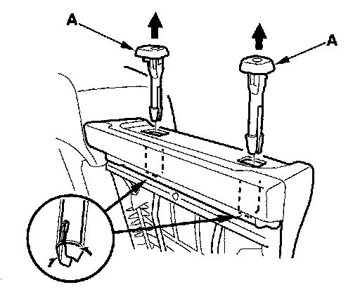
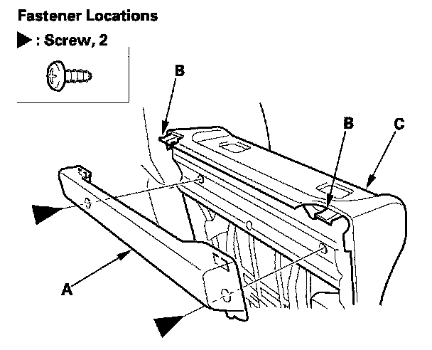
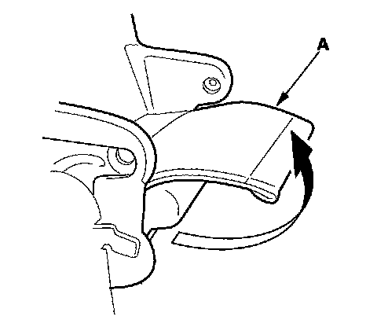
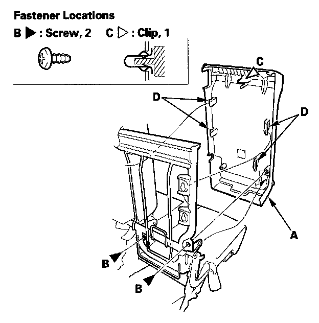

Second Row Seat Armrest Panel
Second Row Seat Armrest Panel ReplacementSpecial Tools Required
KTC trim tool set SOJATP2014 *
* Available through the American Honda Tool and Equipment Program
NOTE:
- Use the appropriate tool from the KTC trim tool set to avoid damage when removing components.
- Take care not to tear the seams or damage the seat covers.
1. Remove the armrest.
2. Remove the center head restraint.

3. Pull out the head restraint guides (A) while pinching the end of the guides, and remove them.

4. Remove the screws, gently pull out the rear armrest cover (A) to release the hooks (B) of the armrest panel (C), then remove the cover.

5. Pull back the ISO fix trim (A).

6. Remove the armrest panel (A).
1. Remove the screws (B).
2. Gently pull out the armrest panel to detach the clip (C) and to release the hooks (D).
7. Install the armrest panel in the reverse order of removal, and note these items:
- Replace the clip if it's damaged.
- Push the clip and hooks on the panel into place securely.